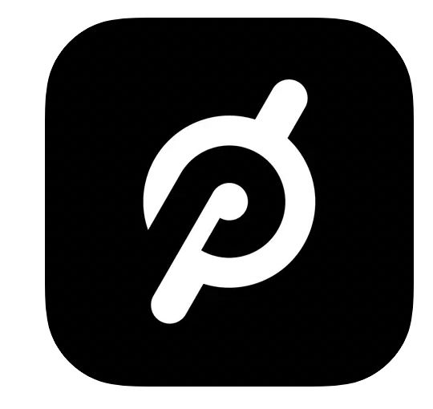
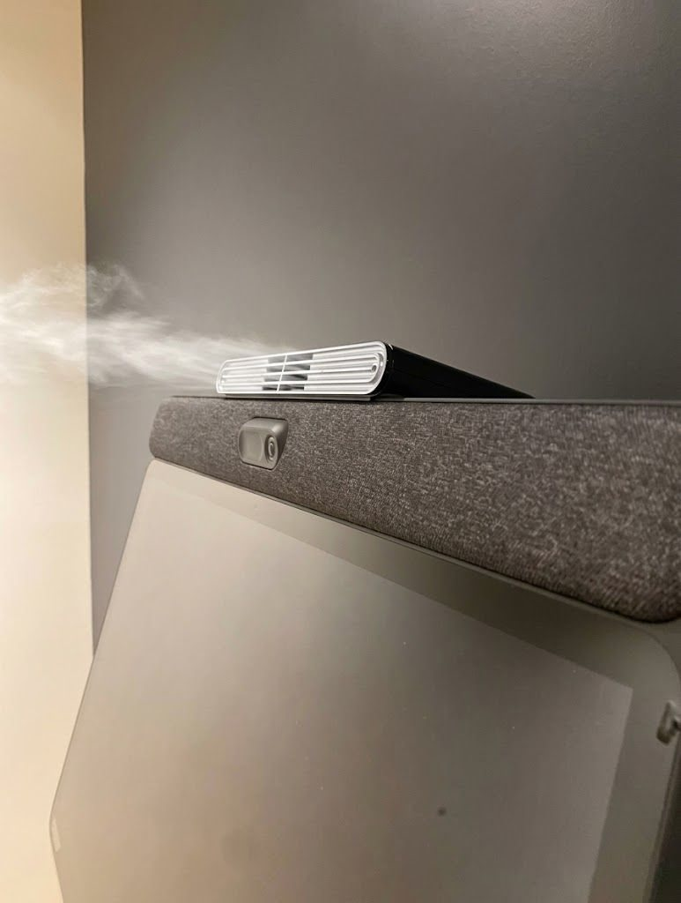
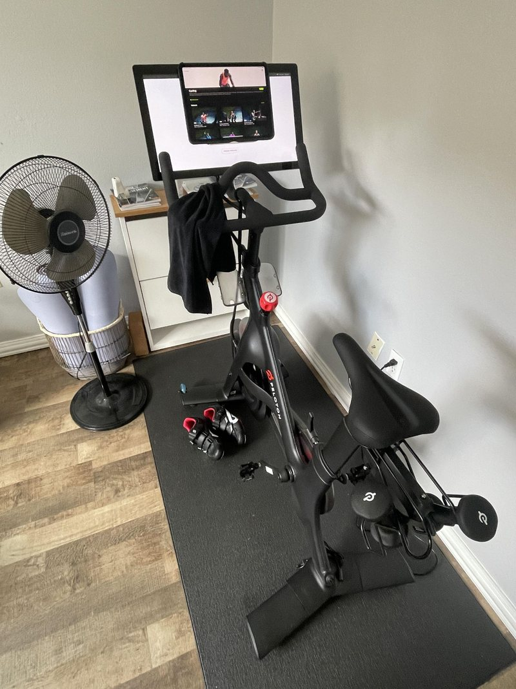
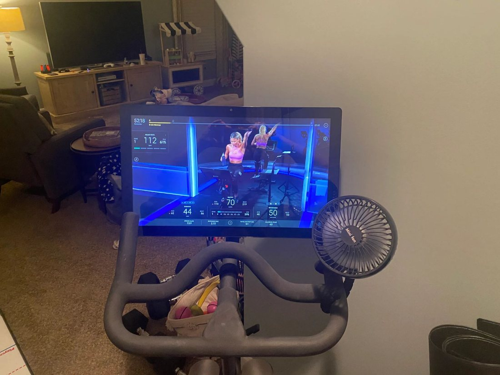
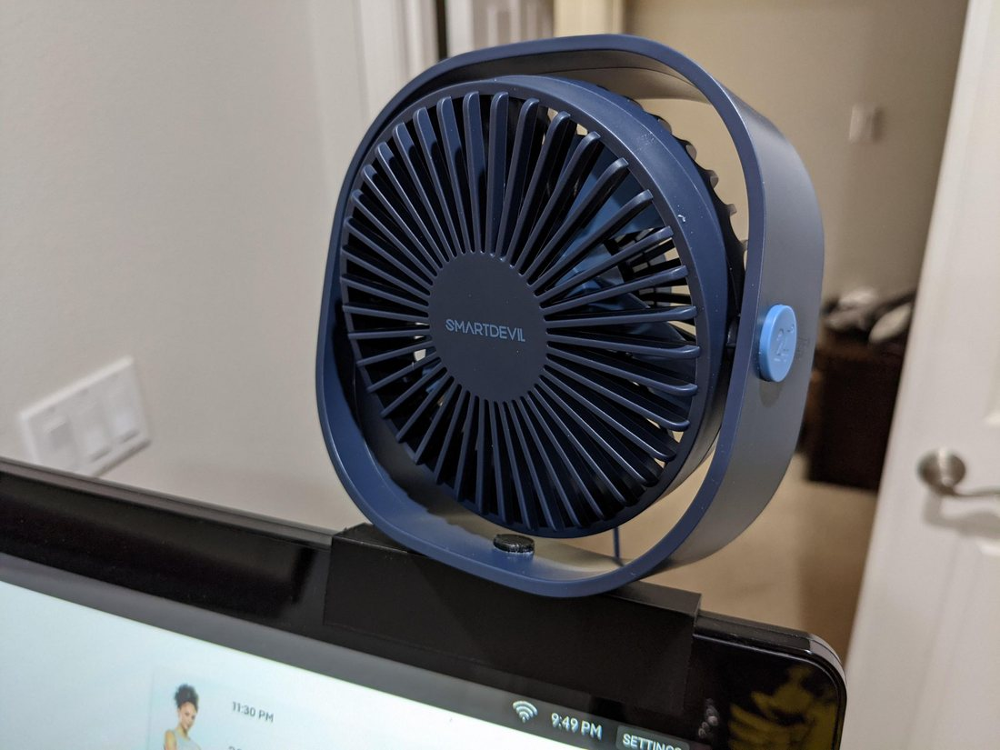

← All case studies

Generative Research · Cross-Training SeriesPeloton Fan


01
The Challenge
The objective
If Peloton were to build a fan, we needed to understand how to improve the member experience and meaningfully outperform third-party fans already on the market.
The question
What does an ideal fan experience look like for Peloton members, and where do existing solutions fall short?
02
Method & Recruitment
Unmoderated remote contextual inquiry via self-recorded video (30)
- Why this method: we needed to see actual at-home setups, not just hear members describe them. Where the fan was mounted, how members interacted with it mid-workout, and where friction occurred were things members likely couldn't fully articulate in an interview.
- Asynchronous, self-recorded submissions let me observe real environments and unprompted behavior.
Recruitment: Peloton Bike members already using a third-party fan
- Drawn from the beta testing group, screened for a spread across age group, gender, location, equipment (Bike only), workout frequency with a fan, and workout intensity.
- Why this mix: fan usage patterns and pain points could plausibly vary by how often and how hard someone trains, so I needed signal across that range rather than a single usage pattern.
03
Logistics & Process
5 days
Scoping & Recruitment
- Stakeholder meetings
- Determining method
- Creating research brief
- Creating screener
- Programming unmoderated guide into Dscout
3 days
Fielding
- Reaching out to members
- Collecting video submissions
6 days
Analysis & Report
- Reviewing video submissions
- Identifying patterns and themes
- Pulling representative quotes and videos
- Drafting insights and recommendations
1 day
Present
- Presenting findings to PM and design
- Aligning on go/no-go
Total time: ~3 weeks
Running the study
Step 1
Submission instructions
- Participants received guidelines on what to capture: their fan setup, and how they use it mid-workout.
Step 2
Natural capture
- Participants filmed their real setup and typical fan use during an actual workout.
Step 3
Fan interaction
- Participants showed adjusting speed and direction, and any friction they experienced doing so.
How I analyze feedback
Review
Review sessions
- Watched recordings and read transcripts for recurring patterns in setup, usage, and friction.
Log
Log themes
- Documented emerging themes in a data log as they surfaced across sessions.
Pull
Quote and video pulling
- Manually pulled representative quotes and video clips tied to each theme, for concrete evidence behind each insight.
04
Findings & Recommendations
Fan speed
Insight
Members wanted different airflow levels depending on workout intensity. Low, medium, and high effort each called for a different level of airflow.
Recommendation
Build three distinct fan speeds, with usability testing as a next step to confirm the right calibration.
Placement
Insight
Members consistently wanted airflow directed at their face without obstructing the screen or handlebars, but most third-party setups couldn't reliably achieve this.
Recommendation
Mount the fan above the tablet, directly facing the member, rather than on the frame or below the tablet.

Distance and breadth of airflow
Insight
Members wanted airflow close enough to feel effective, but not so close that it felt like a targeted blast.
Recommendation
Design the fan to deliver broader airflow coverage rather than a concentrated stream of air.

Control access
Insight
The most consistent pain point: members had to dismount the bike just to change fan speed or direction.
Recommendation
Integrate fan controls within reach of the bike, so members can adjust settings without dismounting.
05
Business Impact
GoDesign specs finalized to move into prototyping
This research directly shaped the fan's final design (adjustable speed, placement, and breadth of airflow) and informed the go/no-go decision to build the product at all.
Why this matters
Finding real differentiation from third-party fans was the deciding factor in moving the product forward.
06
Next Steps & Takeaway
The follow-up
Findings fed into a usability study with an early-stage prototype, focused on:
- First-time experience
- Hardware button placement
- Whether vents should remain static or moveable
- Overall sentiment towards the physical experience
What I'd do differently
I'd bring industrial designers in during the initial generative research phase. Not to point research toward an existing direction, but so their technical and manufacturing expertise could sharpen the questions I was asking.
They would have known what was mechanically feasible (mounting points, materials, moving parts) that I wouldn't have thought to probe as a researcher, surfacing sharper, more buildable insights earlier rather than needing a second usability round to catch feasibility issues.